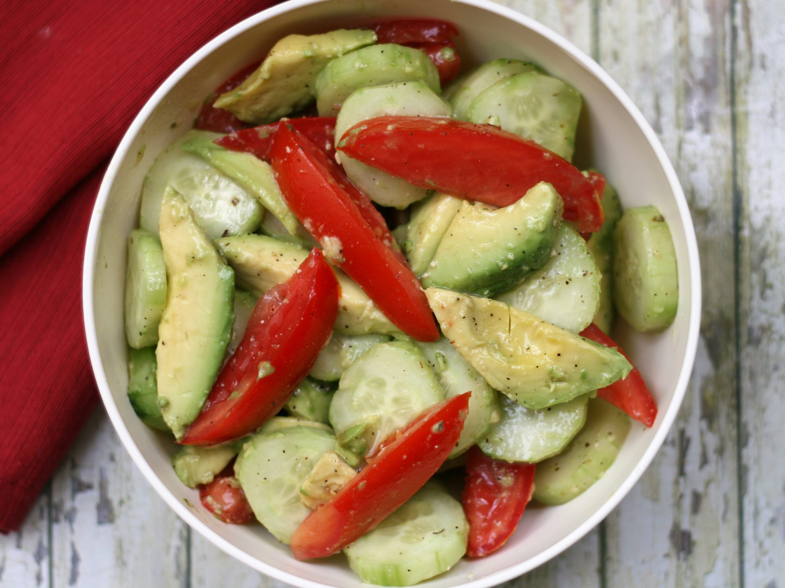

Avocado tomatoe salad with cucumbers

Description
This is a fusion between Greek, Italian, and Latin cultures. This salad can add a healthy, yet very hearty, satisfying blend to any dinner. It is sure to release all of those endorphins including dopamine that make you feel great after pigging out at a fast food or a comfort food dinner but staying as healthy as can be. How many recipes can make that claim? Well this one can!
Ingredients
- 5 medium avocados - halved, peeled and pitted
- 2 large cucumbers, end trimmed
- 4 medium Roma tomatoes
- 1/4 cup rice wine vinegar
- 1/4 cup italian salad dressing
- 1/4 teaspoon dried oregano leaves
- 3/4 teaspoon freshly ground black pepper
- 1/2 teaspoon sea salt
Steps
- Cut avocados into wedges. Peel cucumbers, if desired, and cut into slices. Core tomatoes and cut into wedges. Transfer all to a bowl.
- Add vinegar, Italian dressing, oregano, pepper, and salt; mix until well combined. Taste and adjust seasonings.
Return to main page